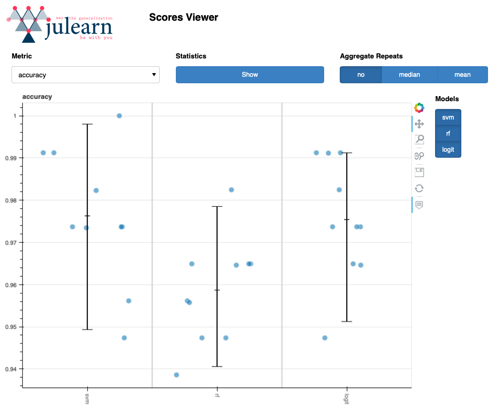

2.4. Model evaluation#
The returns of run_cross_validation()#
So far, we saw how to run a cross-validation using the PipelineCreator
and run_cross_validation(). But what do we get as output from such a
pipeline?
Cross-validation scores#
We consider the _iris_ data example and one of the pipelines from the previous
section (feature z-scoring and a svm). However, this time we assign
the returned value of
run_cross_validation() to a variable called scores.
from julearn.model_selection import run_cross_validation
from julearn.pipeline import PipelineCreator
# create pipeline
creator = PipelineCreator(problem_type="classification")
creator.add("zscore")
creator.add("svm")
# run cross-validation
scores = run_cross_validation(
X=X,
y=y,
data=df,
model=creator,
)
The scores variable is an ExtendedDataFrame object which contains as rows
the folds (and/or repititions) of the cross-validation and as columns the
information about the scoring for each fold.

We can for example see that there is n_train=120 samples in each fold’s
training set and n_test=30 samples in each respective validations set.
Additionally, we see that for example the test_score for the third fold is
0.933. This means that the model achieved a score of 0.933 on the validation set
of this fold.
Cross-validation is particularly useful to inspect if a model is overfitting.
For this purpose it is useful to not only see the test scores for each fold but
also the training scores. This can be achieved by setting the
return_train_score parameter to True in run_cross_validation():
scores = run_cross_validation(
X=X,
y=y,
data=df,
model=creator,
return_train_score=True,
)
Leading to an additional column train_score in the scores variable:

For a model that is not overfitting, the training and test scores should be similar. In our example, the training and test scores are indeed similar.
The column cv_mdsum on the first glance might appear a bit cryptic. However,
it can be useful for internal checks, to see if the same CV was used or not. But
this is nothing you need to worry about at this point.
Returning a model (estimator)#
Now that we saw that our model doesn’t seem to overfit, we might be interested
in not only the scores but also want to return a model. For that purpose
run_cross_validation() has the parameter return_estimator. It can
have three different values:
1. "cv": This will lead to run_cross_validation() returning all the
estimators from each CV fold, fitted on the training data of the respective
fold, i.e. the models that led to the above scores in each fold.
2. "final": With this setting, an additional model will be trained on the
entire training dataset and not on the cv folds. This model will be returned.
The scores will still refer to the cv folds.
1. "all": In this scenario, all the estimators (final and cv) will be
returned.
For demonstration purposes we will have a closer look at the "final"
estimator option (same pipeline as above) and therefore assign the returned
values of run_cross_validation() to a variable called scores (for
the CV scores) and model (for the returned model):
scores, model = run_cross_validation(
X=X,
y=y,
data=df,
model=creator,
return_train_score=True,
return_estimator="final",
)
scores will contain the same content as before. The model variable
is a sklearn estimator object and has all the information on our pipeline and
the retrained information on the entire training dataset.

We can use this estimator object to for example inspect the coefficients of the model or make predictions on a hold out test set. To learn more about how to inspect models please have a look at Inspecting Models.
Cross-validation types and scoring#
Cross-validation splitters#
When performing a cross-validation, we need to split the data into training and validation sets. This is done by a cross-validation splitter, that defines how many folds should be used, how often the cross-validation should be repeated and how the data should be split. When splitting the data they can for example be shuffled, one can consider certain groups for splitting or the splits can be stratified according to some pre-defined variables.
So far, however, we didn’t specify anything in that regard and still the cross-
validation was performed and we got five folds (see the five rows above in the
scores dataframe). This is, because per default run_cross_validation()
falls back to the scikit-learn defaults, which is a StratifiedKFold (k=5) for
classification and KFold (k=5) for regression. So in our case a KFold
cross-validation with five folds was performed.
Note
These defaults will change when they are changed in scikit-learn as here Julearn just falls back to the scikit-learn defaults.
We can define the cross-validation splitting strategy ourselves by passing an
int, str or cross-validation generator to the cv parameter of
run_cross_validation(). The default described above resembles cv=None.
the second options is to pass only an integer to cv. In that case still the
same default splitting
strategies will be used (StratifiedKFold for classification,
KFold for regression), but the number of folds will be changed to the value
of the provided integer (e.g. cv=10). To define the entire splitting
strategy, one can pass all scikit-learn compatible splitters [4]
to cv. However, Julearn provides a built-in set of possible splitters that
can be found under Model Selection (see more about them in
Cross-validation splitter). The fourth option is to pass an
iterable that yields the train and test indices for each split.
Using the same pipeline (creator) as above, we can define a cv-splitter and
pass it to run_cross_validation() as follows:
from sklearn.model_selection import RepeatedStratifiedKFold
cv_splitter = RepeatedStratifiedKFold(n_splits=5, n_repeats=2, random_state=42)
scores = run_cross_validation(
X=X,
y=y,
data=df,
model=creator,
cv=cv_splitter,
return_train_score=True,
)
This will lead to a cross-validation being performed 10 times
(5 folds x 2 repeats), so the returned scores dataframe will have 10 rows
now. We set the random_state to an arbitrary integer to make the splitting
of the data reproducible.
{kind=link}
Scoring#
Nice, we have a basic pipeline, with preprocessing of features and a model, we defined the splitting strategy for the cross-validation the way we want it and we had a look at our resulting train and test scores when performing the cross-validation. But what do these scores even mean?
Same as for the kind of cv-splitter, run_cross_validation() has a default
assumption for the scorer to be used to evaluate the cross-validation, which is
always the model’s default scorer. Remember, we used a support vector classifier
with the y (target) variable being the species of the iris dataset
(possible values: ‘setosa’, ‘versicolor’ or ‘virginica’). Therefore we have a
multi-class classification (not to be confused with a multi-label
classification!). Checking the scikit-learn documentation of a support vector
classifier’s default scorer, we can see that this is the
‘mean accuracy on the given test data and labels’ [5].
With the scoring parameter of run_cross_validation(), one can define
the scoring function to be used. On top of the available scikit-learn scoring
parameter options, julearn extends the
functionality with more internal scorers and the possibility to define custom
scorers. To see the available Julearn scorers, one can use the
list_scorers() function:
from julearn import scoring
scoring.list_scorers()
To use a Julearn scorer, one can pass the name of the scorer as a string to the
scoring parameter of run_cross_validation(). If multiple different
scorers should be used, a list of strings can be passed. For example, if we were
interested in the accuracy and the f1 as scorer we could do the
following:
scoring = ["accuracy", "f1_macro"]
scores = run_cross_validation(
X=X,
y=y,
data=df,
model=creator,
cv=cv_splitter,
return_train_score=True,
scoring=scoring,
)
The scores dataframe will now have train- and test-score columns for both
scorers:

Basic model comparisons with Julearn#
The example model seems to perform decently well. But what if we want to compare the performance of different models, for example when using different learning algorithms?
To statistically compare different models, Julearn provides a built-in corrected t-test. To see how to apply it, we will first build three different models, each with another learning algorithm and then statistically compare them.
Running different models#
To perform a binary classification (and not a multi-class classification) we
will switch to the breast_cancer dataset from scikit-learn [6] as an
example. The to be predicted target states if the cancer is malignant or benign.
from sklearn.datasets import load_breast_cancer
data = load_breast_cancer()
df = pd.DataFrame(data.data, columns=data.feature_names)
df["target"] = data.target
X = df.iloc[:,:-1].columns.tolist()
y = "target"
We start by defining the same cv_splitter as above and two scorers:
cv_splitter = RepeatedStratifiedKFold(n_splits=5, n_repeats=2, random_state=42)
scoring = ["accuracy", "roc_auc"]
We will use the same pipeline as above, but this time without the
PipelineCreator and instead define the pipeline directly in
run_cross_validation(). We use three different learning algorithms that
we want to compare and use the default hyperparameters for each of them.
Model 1: default SVM.
scores1 = run_cross_validation(
X=X,
y=y,
data=df,
model="svm",
preprocess="zscore",
problem_type="classification",
scoring=scoring,
cv=cv_splitter,
)
Model 2: default Random Forest.
As we can see in Models (Estimators), we can specify to use a random forest
by passing the rf string to the model parameter of
run_cross_validation().
scores2 = run_cross_validation(
X=X,
y=y,
data=df,
model="rf",
preprocess="zscore",
problem_type="classification",
scoring=scoring,
cv=cv_splitter,
)
Model 3: default Logistic Regression.
scores3 = run_cross_validation(
X=X,
y=y,
data=df,
model="logit",
preprocess="zscore",
problem_type="classification",
scoring=scoring,
cv=cv_splitter,
)
We will add a column to each scores dataframes to be able to distinguish the different models later on.
scores1["model"] = "svm"
scores2["model"] = "rf"
scores3["model"] = "logit"
Statistically compare the models#
Comparing the performance of these three models is now as easy as the following one-liner:
from julearn.stats.corrected_ttest import corrected_ttest
stats_df = corrected_ttest(scores1, scores2, scores3)
print(stats_df)
This gives us a dataframe with the corrected t-test results for each pairwise comparison of the three models’ fit_time, score_time and test scores:

We can see, that none of the models performed better with respect to neither accuracy nor roc_auc. However, the Random Forest was slower than both the SVM and the Logistic Regression.
Visualize the models#
Visualizations can help to get a better intuitive understanding of the differences between the models. To get a better overview of the performances of our three models, we can make use of Julearn’s visualization tool to plot the scores in an interactive manner. As visualizations are not part of the core functionality of Julearn, you will need to first manually install the additional following dependencies inside your respective environment, using either pip or conda:
Using pip:
pip install panel
pip install bokeh
Using conda:
conda install -c conda-forge panel
conda install -c bokeh bokeh
From here we can create the interactive plot. Interactive, because you can choose the models to be displayed and the scorer to be plotted.
from julearn.viz import plot_scores
panel = plot_scores(scores1, scores2, scores3)
panel.show()
This is what your plot could look like:
{kind=link}
Well done, you made it until here and are now ready to dive into Selected deeper topics! Maybe you are curious to learn Cross-validation consistent Confound Removal or want to learn more about Inspecting Models.